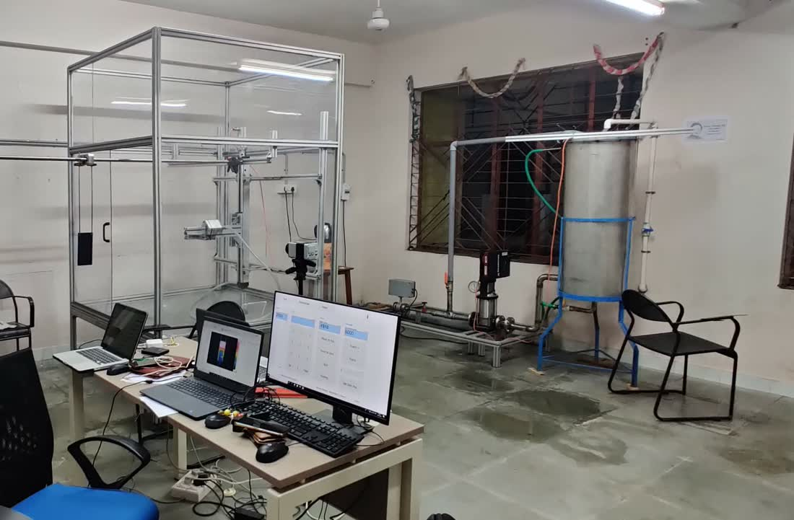
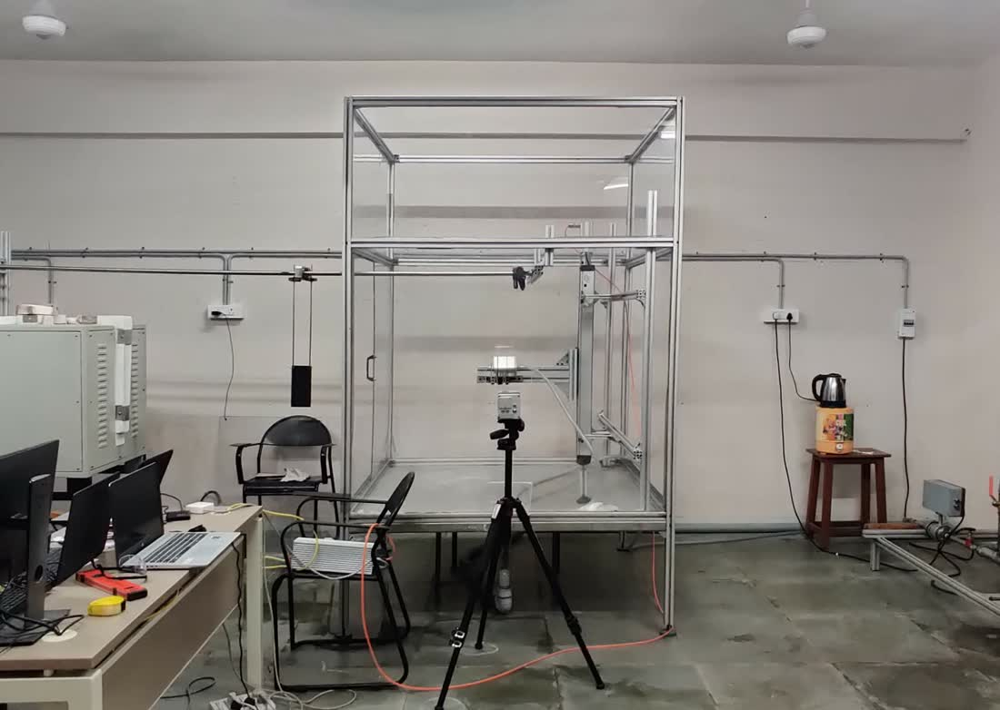
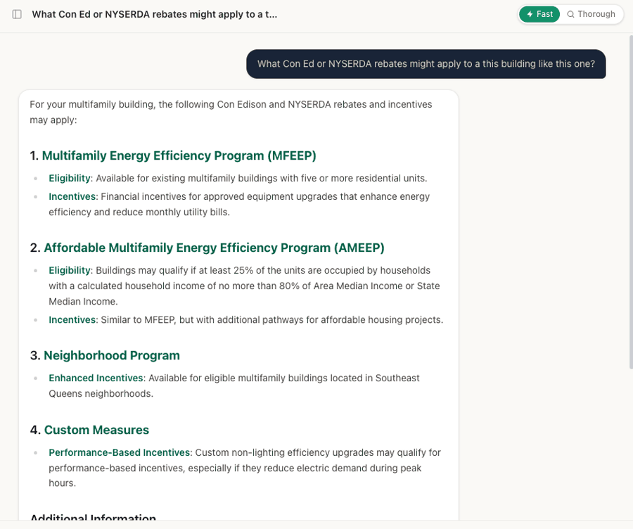

The systems I work on don't let you run experiments.
You cannot explore on an occupied building, stress a grid to see what happens, or cycle a deployed battery fleet to failure. Every project here is the same problem: learn a physical system from data you did not get to choose, then work out how much to trust the answer.
Learn offline
Policies trained on logged data, because live exploration is unsafe or impossible. CQL, behavior cloning, fitted Q-iteration.
Handle censoring
Most units never fail inside the observation window. Discrete-time hazard models instead of naive regression.
Quantify it
Conformal prediction and residual methods, so a flag comes with a calibrated confidence rather than a number.
Validate honestly
Closed-loop evaluation against a real simulator. Most of what looks good open-loop does not survive it.
The physics background is what makes the fourth one possible. You cannot tell whether a model is wrong in an interesting way unless you know how the equipment behaves.
Selected work
Six projects that show the range. Open any one for the detail.
You cannot run online RL against an occupied building, so the policy has to be learned from logged data and trusted before it touches a thermostat. I built a 523,775-transition offline dataset for cooling-setpoint control, built from a year of 5-minute EnergyPlus simulation merged with 2023 NYISO Zone J real-time prices, and trained Conservative Q-Learning policies plus a hand-designed comfort-safety router on top.
Then I evaluated everything three times, at increasing fidelity: rollout through a learned dynamics model, open-loop replay through EnergyPlus, and closed-loop replay where true zone temperatures feed back into the state every five minutes.
Open-loop, the price-tuned CQL variant looked like a clear win, exactly the result a project would stop and report. Close the loop and it inverts. A trivial fixed 24 °C setpoint had the lowest mean realized cost and the lowest comfort penalty across the 18 cooling-active episodes, and was never the worst policy on either.
The router's failure turned out to be control logic rather than forecasting: its open-loop comfort prediction matched reality on 16 of 18 episodes, but the shed/recover rule compounded once fed back through real dynamics. I traced it to a one-line defect in the recovery branch, pinned it, and re-ran the validation unchanged. Comfort penalty dropped 6×. The headline result held anyway. The fixed setpoint still won.
The contribution isn't an algorithm. It's that open-loop evaluation, which is how most of this work gets validated, can certify a policy that makes things worse when deployed.
Read the full write-up, with charts and results tables →
PyTorchConservative Q-LearningOffline evaluationEnergyPlusNYISO market data
An open-source anomaly detection and time-to-failure system for fleet-scale battery degradation, built on the Severson fast-charging dataset. Currently underway: the data foundation is complete and the modeling layer is in progress.
So far: an ingestion pipeline turning BEEP-structured cell records into a clean modeling set of 139 cells and roughly 114,000 cell-cycle rows, queryable through DuckDB. Validation surfaced two things worth knowing. Near-zero internal-resistance readings cluster at early cycles and end of life. Physically impossible, so sensor artifacts, kept and flagged rather than dropped. And only 43 of 140 cells ever cross the 80% capacity failure threshold.
That second one is the actual problem. Roughly 70% of the fleet is right-censored, which means naive time-to-failure regression would train mostly on cells that never failed. The modeling approach is a discrete-time hazard model in person-period format, a next-step residual model for day-to-day anomaly flagging, and conformal prediction wrapping both for calibrated uncertainty.
Discrete-time hazard modelingSurvival analysisConformal predictionDuckDBPython
The lab had a furnace, some actuators, pumps, and an IR camera. It did not have a way to study quenching failure, so our capstone team built one.
We CAD-modeled the rig in SolidWorks (quenching platform, actuator assembly, plate-transport rail) around the equipment that already existed, then fabricated the whole thing: the jet nozzle machined on a CNC mill, the rail that carries heated plates out of the furnace to the platform, the actuator mechanism, and the water plumbing.
Motion control was programmed and calibrated in Arduino, and the IR camera calibrated in MATLAB so surface temperature could be read accurately, in real time, through the quench.


SolidWorksCNC machiningArduinoMATLABIR thermography
Utility and state incentive rules live in hundreds of pages of program manuals, and the team was reading them by hand for every project.
I designed and built a retrieval-augmented generation tool (FastAPI, React, LangChain, ChromaDB) that gives the team a chat interface over those rules. It answers with citations back to the source clause and auto-calculates project-specific savings and incentive dollars deterministically, so the arithmetic never comes out of a language model.
Architected so the retrieval layer and the calculation layer can be reused as the base of a shared internal platform for other team tools.

FastAPIReactLangChainChromaDBRAG
Urban heat island research under Prof. Arvind Narayanaswamy, modeling seasonal and diurnal heat transfer behavior across urban environments.
I analyzed 50,000+ hourly temperature records, combining physics-based conduction, convection, and radiation models with multivariable regression to quantify how specific urbanization variables drive thermal response.
Then integrated 200+ radiosonde atmospheric profiles to build learned emissivity projections across atmospheric layers, which improved predictive accuracy on temperature rise and thermal intensity.
Heat transfer modelingRegressionRadiosonde dataPython
A Python thermal and electrical load model for residential and commercial building electrification, covering space heating, domestic hot water, and plug loads.
Using NYISO market and demand data, I evaluated grid-level thermal-to-electric load shifts under extreme weather scenarios and what they imply for system reliability and renewable integration.
Forecast models built on multivariable regression landed under 10% error, and fed system-level planning under future electrification scenarios.
PythonLoad modelingNYISO dataForecasting
Data I have actually worked with
Not benchmark datasets. Metered, messy, and collected off real equipment, with the sensor artifacts that come with it.
Where I've done it
Field diagnostics, investment-grade analysis, and the research that came before.
to present
Senior Energy Engineer
Empowered Buildings, New York
Lead system-level thermal and energy performance analysis across a portfolio of retrofit and upgrade projects, validating modeled behavior against measured utility and operational data, finding the deviations, and recommending what to change. Also the home of the offline RL and RAG work above.
to Oct 2024
Energy Engineer I
En-Power Group, New York
Investment-grade thermal system analysis for 20+ buildings. Lead auditor on 9 multifamily properties totalling 1,000+ units and 2M+ sq ft, directing on-site testing and diagnostics that surfaced 15–20% efficiency improvement opportunities.
to Dec 2023
Energy Engineering & Auditing Intern
En-Power Group, New York
On-site thermal and energy audits across 15+ buildings and 1M+ sq ft. Daylighting, sub-metering, and load analyses; thermal modeling and documentation for 20+ LL87 and LL97 filings.
to 2023
MS, Mechanical Engineering
Columbia University
Advanced heat transfer, advanced fluid mechanics, building energy and simulation, energy economics and optimization, data science for mechanical engineers.
to 2022
B.Tech, Mechanical Engineering
National Institute of Technology, Tiruchirappalli
Thermal engineering, heat and mass transfer, computational fluid dynamics, data structures and algorithms. Capstone: the jet-quenching rig.
Toolkit
The third column is why the first two are worth something on physical systems.
Machine learning
- Offline reinforcement learning (CQL, FQI, BC)
- Survival and discrete-time hazard models
- Conformal prediction for uncertainty
- Residual-based anomaly detection
- Time-series forecasting and regression
- Closed-loop policy evaluation
Code and data
- Python, PyTorch
- NumPy, Pandas, SciPy
- DuckDB, Parquet pipelines
- FastAPI, React
- LangChain, ChromaDB
- MATLAB, C (read)
Physical systems
- Thermodynamics and heat transfer
- EnergyPlus, COMSOL, ANSYS
- Field diagnostics and instrumentation
- Model-to-measurement validation
- SolidWorks, CNC machining, Arduino
- IR thermography and calibration
Looking for machine learning work on systems that touch the physical world.
The field at the top of this page is a live 2-D heat equation, solved with an explicit finite-difference scheme in the browser. Same physics as the quenching rig, fewer sparks.